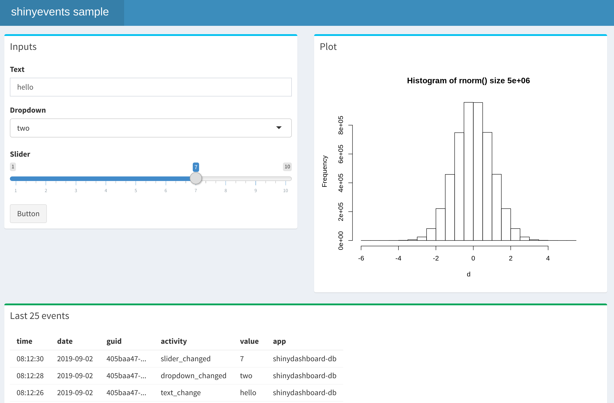

shinyevents provides a flexible and easy to use framework to record activity occurring withing a Shiny app. The logged information can be accumulated and later be used to help improve the app’s performance and user’s experience.
Installation
The development version of shinyevents is available on GitHub:
Usage
shinyevents attempts to provide a simple way to track different Shiny events by using two functions. The first function is one of four which initialize the tracking:
-
shiny_events_to_log()- Saves the event data into a.logfile -
shiny_events_to_csv()- Saves the event data into a.csvfile -
shiny_events_to_dbi()- Saves the event data into a database, via theDBIpackage -
shiny_events_to_logger()- Sends the event as an entry to theloggerpackage
Once the target for the event tracking is chosen, shinyevents is initialized by assigning the function’s result to a variable:
Once initialized, the second function to use, is one created inside the assigned variable. The function is called: event(). Since selected variable’s name was tracker, to access it we use tracker$event(). To it we can pass two values, as arguments, those values are free-form text, so the developer of the app can decide what to record:
By default, the log file name is shiny-events.log. At this point, it can be accessed in one of many ways. In this case we’ll just use readLines().
readLines("shiny-events.log")
#> [1] "2019-09-03 16:27:16 CDT INFO shinyevents 09ea7480-d32c-41f6-8394-6c10f1cf38fc example readme"A Globally Unique Identifier, or GUID, is created by shiny_events_to_log(). Every event entry for that session will contain the same GUID. This allows us to know what activity was part of which app’s user session.
readLines("shiny-events.log")
#> [1] "2019-09-03 16:27:16 CDT INFO shinyevents 09ea7480-d32c-41f6-8394-6c10f1cf38fc example readme"
#> [2] "2019-09-03 16:27:16 CDT INFO shinyevents 09ea7480-d32c-41f6-8394-6c10f1cf38fc start_app "
#> [3] "2019-09-03 16:27:16 CDT INFO shinyevents 09ea7480-d32c-41f6-8394-6c10f1cf38fc slider 3"
#> [4] "2019-09-03 16:27:16 CDT INFO shinyevents 09ea7480-d32c-41f6-8394-6c10f1cf38fc stop_app "In a Shiny app
Here is the code for a sample app that tracks several different events:
- App’s session begins
- Slider is changed, and its current value
- Beginning of the plot’s output processing
- Completion of the plot’s output processing
- App’s session closes
Feel free to copy and run this code in your R session. There are several comments inside the code to further clarify the purpose of the tracking related activity.
library(shiny)
library(shinyevents)
ui <- fluidPage(
titlePanel("Old Faithful Geyser Data"),
sidebarLayout(
sidebarPanel(sliderInput("bins", "Bins:", 1, 50, 30)),
mainPanel(plotOutput("distPlot"))
))
server <- function(input, output, session) {
tracker <- shiny_events_to_log() # <- Initializes as log file
tracker$event("app_initiated") # <- Tracks start of app session
observeEvent( # <- Track input using shiny::observeEvent()
input$bins,
tracker$event("bin_slider", input$bins), # <- Pass the input's value to the event
ignoreInit = TRUE) # <- ignoreInit avoids logging the input's initial value
session$onSessionEnded( # <- Track when the app closes using session$onSessionEnded
function() tracker$event("close_app")) # <- Combine with a simple event entry
output$distPlot <- renderPlot({
tracker$event("plot_started", input$bins) # <- Tracks code start
x <- faithful[, 2]
bins <- seq(min(x), max(x), length.out = input$bins + 1)
hist(x, breaks = bins, col = 'darkgray', border = 'white')
tracker$event("plot_rendered", input$bins) # <- Tracks code completion
})
}
shinyApp(ui, server)After playing a bit with the slider, the app can be closed. This activity was recorded in a new file, called shiny-events.log. If you tried the app code above, use the readLines() code below to see the resulting entries.
## [1] "2019-09-03 16:22:17 CDT INFO shinyevents ff55ea39-7d8a-4e5f-9f33-18ee804b2218 app_initiated "
## [2] "2019-09-03 16:22:17 CDT INFO shinyevents ff55ea39-7d8a-4e5f-9f33-18ee804b2218 plot_started 30"
## [3] "2019-09-03 16:22:17 CDT INFO shinyevents ff55ea39-7d8a-4e5f-9f33-18ee804b2218 plot_rendered 30"
## [4] "2019-09-03 16:22:20 CDT INFO shinyevents ff55ea39-7d8a-4e5f-9f33-18ee804b2218 bin_slider 19"
## [5] "2019-09-03 16:22:20 CDT INFO shinyevents ff55ea39-7d8a-4e5f-9f33-18ee804b2218 plot_started 19"
## [6] "2019-09-03 16:22:20 CDT INFO shinyevents ff55ea39-7d8a-4e5f-9f33-18ee804b2218 plot_rendered 19"
## [7] "2019-09-03 16:22:22 CDT INFO shinyevents ff55ea39-7d8a-4e5f-9f33-18ee804b2218 plot_started 41"
## [8] "2019-09-03 16:22:22 CDT INFO shinyevents ff55ea39-7d8a-4e5f-9f33-18ee804b2218 plot_rendered 41"
## [9] "2019-09-03 16:22:22 CDT INFO shinyevents ff55ea39-7d8a-4e5f-9f33-18ee804b2218 bin_slider 41"
## [10] "2019-09-03 16:22:24 CDT INFO shinyevents ff55ea39-7d8a-4e5f-9f33-18ee804b2218 close_app " Further info
Some additional information is exposed by the variable assigned to the Shiny event function. These are made available to allow developers to use them in other functions, or to create a custom target for the event tracking. Two of these are:
- The app’s name
- The session’s GUID
The entry() function returns a list object. The list contains the session information, and the date/time of the entry. This is the base function that the shiny_events_to_log(), shiny_events_to_csv() and shiny_events_to_dbi() use.
tracker$entry()
#> $guid
#> [1] "09ea7480-d32c-41f6-8394-6c10f1cf38fc"
#>
#> $app
#> [1] "shinyevents"
#>
#> $datetime
#> [1] "2019-09-03 16:27:16 CDT"
#>
#> $activity
#> [1] ""
#>
#> $value
#> [1] ""Custom event
It is possible to customize the output or add a new target file (beyond CSV, log or Database). To do that, override the event() function after assigning it to a variable. For example, if a pipe delimited file is required for tracking the Shiny events, we could use the following:
tracker <- shiny_events()
tracker$event <- function(activity = "", value = "") {
entry <- tracker$entry(activity = activity, value = value)
cat(
paste(entry$guid, entry$datetime, entry$app, entry$activity, entry$value, "\n", sep = "|"),
file = "shinyevents-pipe.txt",
append = TRUE
)
}
tracker$event("example", "readme")
readLines("shinyevents-pipe.txt")
#> [1] "94f3c1ff-a44d-4c11-9522-4610b6117808|2019-09-03 16:27:16 CDT|shinyevents|example|readme|"CSV example
Initialize a new CSV log with shiny_events_to_csv().
tracker <- shiny_events_to_csv()
tracker$event("start_app")
tracker$event("slider", "3")
tracker$event("stop_app")To avoid file locks, shiny_events_to_csv() uses the cat() function inside its code. It also means that the table will not have headers, so they have to be defined at read time:
read.csv(
"shiny-events.csv",
stringsAsFactors = FALSE,
header = FALSE,
col.names = c("guid", "app", "activity", "value", "datetime")
)
#> guid app activity value
#> 1 96166a44-f08b-4b68-a82a-18aa62f3c55e shinyevents start_app NA
#> 2 96166a44-f08b-4b68-a82a-18aa62f3c55e shinyevents slider 3
#> 3 96166a44-f08b-4b68-a82a-18aa62f3c55e shinyevents stop_app NA
#> datetime
#> 1 2019-09-03 16:27:16 CDT
#> 2 2019-09-03 16:27:16 CDT
#> 3 2019-09-03 16:27:16 CDTDatabase example
shiny_events_to_dbi uses the DBI package to record events. Here are a few highlights of how it works:
- Uses the
dbWriteTable()function, this allows it to work on most databasesDBIis able to interact with - The
append = TRUEargument is used. This allows the table to be created if it doesn’t exists yet, and only to add new records to the table, instead of overriding its content. - It creates, or expects, a table with the following names:
guid,app,datetime,activity,value.
tracker <- shiny_events_to_dbi(table = "shinyevents", connection = con)
tracker$event("start_app")
tracker$event("slider", "3")
tracker$event("stop_app")dbGetQuery(con, "SELECT * FROM shinyevents")
#> guid app datetime
#> 1 d6a2d6bb-5adf-45bc-be99-7fbc48b4086e shinyevents 2019-09-03 16:27:16 CDT
#> 2 d6a2d6bb-5adf-45bc-be99-7fbc48b4086e shinyevents 2019-09-03 16:27:16 CDT
#> 3 d6a2d6bb-5adf-45bc-be99-7fbc48b4086e shinyevents 2019-09-03 16:27:17 CDT
#> activity value
#> 1 start_app
#> 2 slider 3
#> 3 stop_app
Example using logger
To combine with the logger package, simply use shiny_events_to_logger(). The log_appender() function should be initialized before running the first event() function.
library(logger)
t <- tempfile()
log_appender(appender_file(t))
tracker <- shiny_events_to_logger()
tracker$event("start_app")
tracker$event("slider", "3")
tracker$event("data_frame", "0", "warn")
tracker$event("stop_app")
readLines(t)
#> [1] "INFO [2019-09-03 16:27:17] fbcd9a6d-18e5-468a-9ba8-cf52e2c5f564 shinyevents start_app "
#> [2] "INFO [2019-09-03 16:27:17] fbcd9a6d-18e5-468a-9ba8-cf52e2c5f564 shinyevents slider 3"
#> [3] "WARN [2019-09-03 16:27:17] fbcd9a6d-18e5-468a-9ba8-cf52e2c5f564 shinyevents data_frame 0"
#> [4] "INFO [2019-09-03 16:27:17] fbcd9a6d-18e5-468a-9ba8-cf52e2c5f564 shinyevents stop_app "Sample apps
The package includes several app examples. The example pictured below, uses shiny_events_to_dbi() to record the events in a database, in this case SQLite. It records when there are changes in each of the inputs, as well as when the plot;s code starts and ends. There are entries for when the app starts and is closed.

Run the following code in your R session to access the app:
shiny::runApp(
system.file(
"samples", "shinydashboard-db",
package = "shinyevents"
),
display.mode = "normal"
)